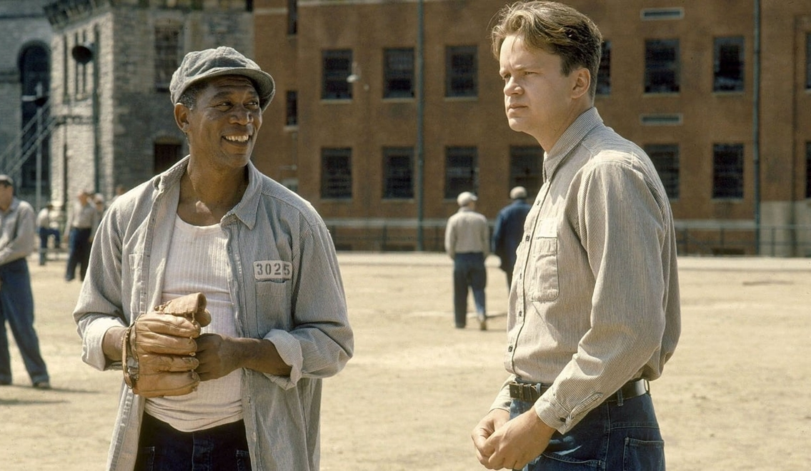

Phim Kinh Điển: The Shawshank Redemption – Cuộc Đào Tẩu Ngoạn Mục Và Tuyên Ngôn Tình Bạn Bất Hủ
Một gã cán bộ ngân hàng hầu tòa vì tội giết người, nạn nhân là vợ của gã và tên nhân tình. Gã bị tuyên án chung thân, điều về nhà tù Shawshank ở Maine. Cuộc đời bầu bạn với bốn bức tường nhám chán, đã đánh dấu cho chương khởi đầu của màn đào thoát vĩ đại nhất.
Andy Dufresne có dáng người cao ráo, gương mặt chính trực nếu không muốn nói là hiền hậu. Gã lầm lì với điệu bộ bất cần trong ngày đầu đến Shawshank. Đêm đầu tiên được “chính phủ” bao nuôi, xà lim của Andy không phát ra bất cứ âm thanh nào. Có vẻ nhân vật chính khá lì đòn, nhưng sự bướng bỉnh ấy đã khiến cho Red – một tên tù nhân thuộc hàng “trưởng lão” bị thua độ, mất hai bao thuốc lá.
Nhà tù Shawshank có vẻ được xây dựng từ khá lâu, một nơi mà tất cả mọi thằng cặn bã đều vô tội, chẳng qua họ bị luật sư “nện” thôi. Trong cái chốn tập trung đủ thứ tệ nạn, Andy Dufresne ra vẻ như một gã tri thức thanh cao, không giao tiếp, tránh xa mọi rắc rối. Nhưng đâu có nghĩa làm vậy là mấy chuyện phiền phức sẽ né gã, Andy vẫn bị gây sự, trở thành công cụ tình dục cho các tay anh chị lâu ngày bí bách. Tuy nhiên rõ ràng Andy hiểu được lao động trí óc vẫn khỏe hơn so với lao động tay chân. Thế là gã “khởi nghiệp” ngay trong nhà tù bằng chuyên môn trình độ của mình. Khách hàng của Andy không phải là ông bạn thân Red, mà chính là những cai ngục, trưởng quản ngục và thậm chí là ông Norton – giám đốc nhà tù.

Thụ án quá lâu, chuỗi ngày dài duy trì thói quen sinh hoạt theo mệnh lệnh, ăn khi được phép ăn, ngủ khi được phép ngủ và đi vệ sinh khi được cho phép “xả”. Shawshank chính thức trở thành mái nhà chung của những mảnh đời tội lỗi, có vẻ cả Chúa cũng bỏ rơi họ. Như thường lệ, gắn bó quá lâu thì liệu mấy ai đủ can đảm rời khỏi tổ ấm này kia chứ. Tuổi già đeo bám, bệnh tật bao vây, thật khó khăn khi giờ đây bất thình lình được trả tự do.
Được ân xá lẽ ra phải là điều hạnh phúc nhất. Nhưng đối với Brooks – lão già trông coi thư viện trong Shawshank thì KHÔNG. Thật trớ trêu khi chính phủ quẳng một ông già gần đất xa trời ra ngoài xã hội, mục đích là để cho lão cơ hội làm lại cuộc đời. Từ một tù nhân có bản lĩnh và “công ăn việc làm” ổn định, Brooks được hợp pháp để sinh hoạt bình đẳng như những công dân Mỹ khác. Lão ta thay vì tận hưởng thì lại muốn phạm tội để được trở về “nhà”, nơi mà mọi hy vọng sống của Brooks được cất giữ. Tài sản quý nhất giờ đây mất trắng, không thể thích nghi với việc sống mà không bị đàn áp. Brooks đáng thương ơi, ông bị thời thế chơi một vố mất rồi.
Bốn bức tường của xà lim thú vị lắm, thuở ban đầu nó khiến tất cả e sợ, chán nản. Dần dần tất cả lại quen với sự hiện diện của nó, để rồi cuối cùng là lệ thuộc vào nó. Thứ bê tông khốn khiếp ấy đã hành hạ Brooks như thế.
Andy ở Shawshank hơn mười năm, theo lời trình bày thì gã – một phó giám đốc ngân hàng vốn vô tội, ngồi tù oan. Cứ cho đấy là sự thật đi, nhưng chính nhờ vào đây mà gã đường đường chính chính trở thành tội phạm. Andy giúp giải quyết các vấn đề về thuế - tài chính cho những nhân viên nhà tù. Nổi bật nhất chắc là trò rửa tiền cho giám đốc Norton, ấy thế nên tên Norton ấy trao cho Andy nhiều quyền lợi đặc biệt.
Từ những cốc bia mát lạnh sảng khoái, đến việc mở rộng thư viện, dạy học cho tù nhân, các buổi xi-nê thư giãn. Andy Dufresne biến Shawshank như một khu nghỉ dưỡng, làm cho tất cả tù nhân trong phút chốc tận hưởng khoảnh khắc tự do huy hoàng nhất.
Năm đấy vợ của Andy và tên gian phu kia mỗi đứa lãnh 4 phát đạn. Cây chó lửa đấy rõ ràng chỉ chứa tối đa 6 viên, chứng tỏ hung thủ bắn xong đã nạp thêm kẹo đồng vào để ngào đường cặp nam nữ. Andy Dufresne máu lạnh đến như thế sao?
Gã phải đòi lại sự công bằng cho mình, khi mà giờ đây nhiều khả năng sẽ có yếu tố lợi điểm giúp Andy kháng án thành công. Nhưng Andy và Norton làm quái gì ký hợp đồng lao động. Chủ doanh nghiệp đang ăn nên làm ra, người lao động cứ lải nhải đòi thôi việc, chuyển công tác. Chuyện vớ vẩn như thế thì làm sao kết thúc đẹp như cổ tích được.
Chúa luôn là sự cứu rỗi mỗi khi con người rơi vào nỗi bất hạnh, Kinh Thánh là thứ đức tin sẽ soi sáng chỉ đường cho kẻ lạc lối. Andy giờ đây đơn độc, tuyệt vọng, gã không tha thiết điều gì nữa. Cái trò mài đá trang trí để giết thời gian giờ tẻ nhạt. Ngồi trong xà lim có Rita Hayworth hay Marilyn Monroe bầu bạn cũng không phấn chấn lên. Gã đi xin Red một sợi dây thừng.
Sáng hôm sau Andy không có mặt trong xà lim lúc điểm danh. Gã tệ thật, ra đi mà chẳng chào tạm biệt Red. Đêm đó nghe đâu Andy Dufresne không ra về bằng cửa chính, có lẽ gã ngại đông người nên đã đi bằng đường cống. Hơn 500m ống cống đã “rửa trôi” tất cả ô nhục mà gã phải chịu đựng, nước cống biến Andy trở thành người “sạch sẽ”. Giờ đây mọi thứ đều hào nhoáng, Andy vô tội, tốt lành hoàn hảo như chính lương tâm của gã.
Gã tặng “một búa” cho tay giám đốc Norton rồi đi “lĩnh lương” cho công sức bao năm làm việc cực khổ, sự chính trực của Andy dẫn đến hành động mà gã làm sẽ đem đến hậu quả xứng đáng của kẻ đáng phải nhận. Gã tặng “một búa” cho tay giám đốc Norton
Cuốn tiểu thuyết Rita Hayworth And Shawshank Redemption của Stephen King khi được chuyển thể và ra mắt tại các rạp chiếu phim, đã thu về doanh thu ảm đạm như chính tình tiết trong nội dung. Nhưng việc có công phá phòng vé hay không thì chẳng ảnh hưởng đến lời khen của giới phê bình dành cho The Shawshank Redemption. “Kẻ Thất Bại Vĩ Đại” nhất lịch sử Oscar vẫn luôn có chỗ đứng trong lòng người yêu điện ảnh.
Tim Robbins có gương mặt lành tính, nhưng cái hiền ấy lại nổi bật lên vẻ thông minh có phần láu cá. Dân ngân hàng, có học thức nên phạm tội hay chuộc tội cũng phải thật trịnh trọng. Nam diễn viên đã biến nhân vật Andy Dufresne trở thành một người truyền cảm hứng thật sự, chẳng có thứ gì quật ngã được nhân loại khi mà niềm tin và hy vọng vẫn còn đấy. Một tấm gương của sự lương tri.
Cũng phải cảm ơn Morgan Freeman bởi chất giọng lôi cuốn đầy quyền uy và vẻ ngoài có phần hài hước đậm mùi đời của ông. Red là người dẫn chuyện duyên dáng nhất trong lịch sử điện ảnh.
“Hy vọng là điều tốt đẹp nhất, có thể là điều tuyệt vời đẹp đẽ nhất. Những thứ tươi đẹp như thế sẽ luôn bất tử.”
Thật khó để an ủi bản thân rằng cuộc sống công bằng, thực tế vốn dĩ không hề mang màu hồng tươi rói cả. Thứ mà con người đối diện là muôn vàn khó khăn, chẳng phải khi sinh ra tất cả đều khóc đấy thôi. Tiếng oa oa chào đời ấy, như lời tiên tri cho những gì không mấy tốt đẹp đang đợi chờ phía trước.
Bước vào cuộc sống, là tiến vào thánh địa hay cấm địa? Thật ra phụ thuộc vào thái độ của chính con người. Số phận đẩy Andy vào vùng tử địa, nhưng sự cương nghị và lòng quyết tâm của gã đã hồi sinh linh hồn của tất cả tù nhân trong Shawshank. Cả một Red sau khi hưởng lệnh ân xá, tưởng chừng cũng đầu hàng nghịch cảnh vì “nhớ nhà”. Sau cùng thứ kéo Red ra khỏi nơi tăm tối chính là Andy, hay nói đúng hơn là “hạt giống hy vọng” mà gã đã gieo cho Red gặt hái.
Năm 1994 là một thời khắc đáng nhớ của điện ảnh, những phim hay như Forrest Gump, Pulp Fiction, The Shawshank Redemption, The Lion King, The Mask….đều cùng ra mắt. Có thể The Shawshank Redemption là phim cũ, nhưng giá trị của tác phẩm là thứ vô giá mãi trường tồn với thời gian.